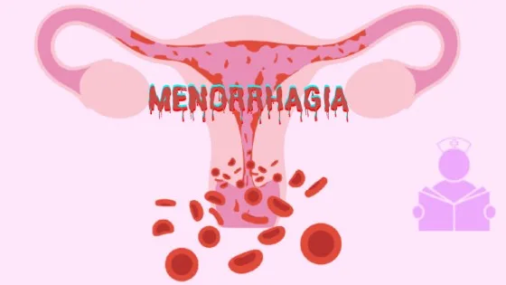
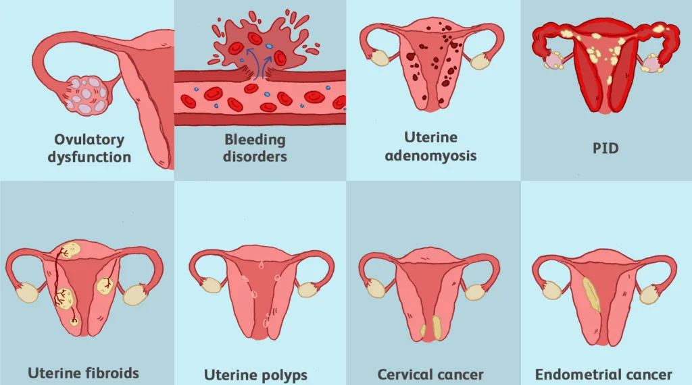
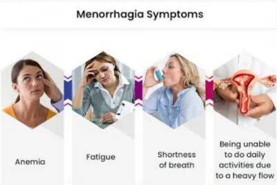
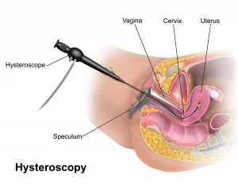
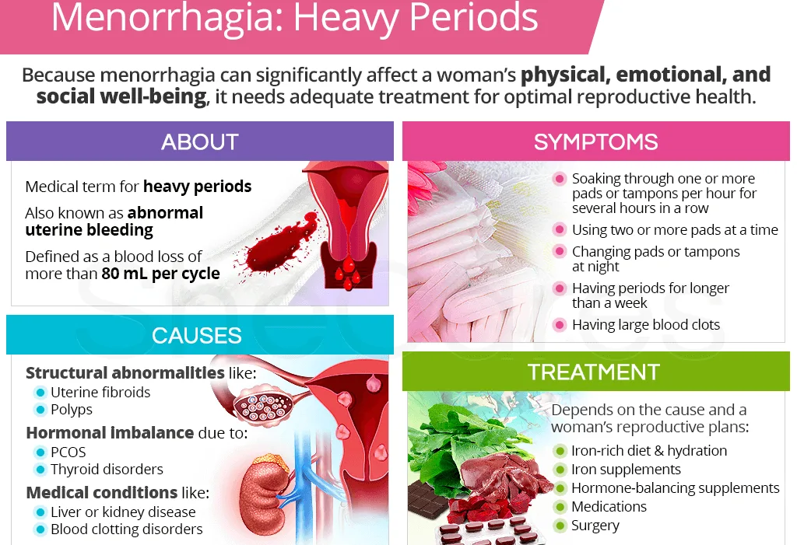

Expanded Nursing Uganda Explanation
Menorrhagia should be understood beyond a short definition. Link the concept to patient history, focused assessment, common risks, nursing priorities, documentation and evaluation of outcomes.
01 MENORRHAGIA
Menorrhagia can be heavy or prolonged menstrual bleeding or both.
02 Causes of Menorrhagia
- Hormonal imbalances: Fluctuations in oestrogen and progesterone, two key hormones in the menstrual cycle, can disrupt the normal regulation of the menstrual cycle. Irregularities in these hormones may lead to excessive and prolonged menstrual bleeding.
- Uterine fibroids : Uterine fibroids are noncancerous growths in the uterus. Depending on their size and location, they can interfere with the normal contraction and relaxation of the uterine muscles, resulting in heavy menstrual bleeding.
- Adenomyosis: Adenomyosis occurs when the inner lining of the uterus (endometrium) grows into the muscular wall of the uterus. This condition can lead to an enlarged uterus and heavy menstrual bleeding.
- Polyps: Uterine polyps are small, benign growths on the lining of the uterus. These growths can cause irregularities in the menstrual cycle, leading to heavy and prolonged bleeding.
- Endometrial hyperplasia: Endometrial hyperplasia is the abnormal thickening of the uterine lining. This condition can result in an increase of the surface area leading to heavy and prolonged menstrual bleeding.
- Inherited bleeding disorders : Conditions like von Willebrand’s disease, which are inherited, affect blood clotting. Women with such disorders may experience excessive bleeding during menstruation.
- PID (Pelvic Inflammatory Disease) : PID is an infection of the female reproductive organs. Inflammation and infection can disrupt the normal functioning of the uterus and surrounding structures, leading to heavy menstrual bleeding.
- Cancers (cervix and endometrium) : Cancerous growths in the cervix or endometrium can lead to irregular and heavy menstrual bleeding. The abnormal growth of cancerous cells interferes with the normal shedding of the uterine lining.
- Ovarian tumours: Tumours in the ovaries can disrupt hormonal balance. Changes in hormone levels may affect the regularity of the menstrual cycle, resulting in heavy bleeding.
- Nutritional factors : Deficiencies or imbalances in certain nutrients can impact overall health, including menstrual health.
- Psychogenic factors (e.g., stress): Psychological stress can influence hormonal balance and the menstrual cycle. Chronic stress may contribute to irregularities in menstrual bleeding, including excessive and prolonged periods.
- Family inheritance : A family history of certain conditions, especially those related to blood clotting or hormonal imbalances, may increase the likelihood of menorrhagia.
- Intrauterine Device (IUD): The use of intrauterine devices for contraception may lead to increased menstrual bleeding in some cases. The presence of the IUD can cause changes in menstrual flow.
- Clotting disorders : Conditions that affect blood clotting, such as certain disorders like Thrombocytopenia, DIC, DVT, or medications like warfarin, heparin, can result in heavy menstrual bleeding. Proper blood clotting is essential for the normal cessation of menstrual flow.
- Functional tumours of ovaries: Tumours in the ovaries that are hormonally active can disrupt the balance of reproductive hormones. This disruption may lead to irregular menstrual cycles and heavy bleeding.
03 Signs and symptoms of Menorrhagia
- Prolonged Menstrual Bleeding: Menstrual bleeding lasting longer than seven days. Menstrual periods last around five to seven days, and bleeding beyond this timeframe may indicate menorrhagia.
- Heavy Menstrual Flow : Soaking through one or more sanitary pads every hour for several consecutive hours, indicating a heavy flow. This level of bleeding is considered excessive and can impact quality of life.
- Passing Large Blood Clots: Experiencing the passage of large blood clots during menstruation. The presence of large blood clots can be a sign of menorrhagia, often causing discomfort and contributing to heavy bleeding.
- Fatigue and Tiredness : Feeling fatigued and tired due to excessive blood loss during menstruation, which can lead to anaemia. Menorrhagia can result in the loss of a significant amount of blood, leading to fatigue, weakness, and decreased energy levels.
- Shortness of Breath or Rapid Heart Rate : Experiencing shortness of breath or a rapid heart rate caused by anaemia resulting from excessive blood loss. Anaemia, a common consequence of menorrhagia, can lead to symptoms such as shortness of breath and an increased heart rate due to decreased oxygen-carrying capacity in the blood.
- Lightheadedness or Dizziness : Feeling lightheaded or dizzy, which can be a symptom of anaemia or excessive blood loss. These symptoms may occur as a result of reduced blood volume and oxygen supply to the body due to heavy menstrual bleeding.
- Disruption of Daily Activities : Menstrual periods that significantly disrupt daily activities due to the severity of symptoms and discomfort. Menorrhagia can lead to the inability to engage in regular activities, impacting work, social life, and overall well-being.
- Iron Deficiency : Developing symptoms of iron deficiency, such as pale skin, brittle nails, and cravings for non-nutritive substances like ice or dirt, due to chronic blood loss associated with menorrhagia.
- Sleep Disturbances : Experiencing sleep disturbances, such as waking up due to the need to change sanitary products during the night, leading to disrupted sleep patterns and fatigue.
04 Diagnosis and Investigations of Menorrhagia
- Complete Medical History and Physical Examination : Conduct a thorough review of the patient’s medical history and perform a physical examination to gather information about symptoms & menstrual patterns.
- Blood Tests : Blood tests will be conducted to assess blood count, iron levels, and hormonal imbalances. These tests can help identify anaemia, iron deficiency, and hormonal irregularities that may contribute to menorrhagia.
- Transvaginal Ultrasound: A transvaginal ultrasound will be performed to evaluate the structure of the uterus and detect any abnormalities, such as fibroids, polyps, or other structural issues that could be causing or contributing to menorrhagia. This imaging technique helps in visualizing the internal reproductive organs and identifying potential sources of abnormal bleeding.
- Endometrial Biopsy: An endometrial biopsy involves the collection and examination of a sample of the uterine lining to check for abnormalities, such as hyperplasia or cancer.
- Hysteroscopy : Hysteroscopy is a minimally invasive procedure that involves the insertion of a thin, lighted tube into the uterus to directly visualize the uterine cavity. This allows to identify and evaluate abnormalities within the uterus, such as polyps, fibroids, or other structural issues contributing to menorrhagia.
- Coagulation Tests : Bleeding time, prothrombin time, and clotting time tests may be conducted to assess for coagulopathy and platelet availability. Abnormal results in these tests can indicate potential bleeding disorders or coagulation abnormalities that may contribute to heavy menstrual bleeding.
- Full Haemoglobin Levels and Hormone Analysis: To rule out hormonal imbalances and to identify any underlying endocrine disorders that could be contributing to menorrhagia. This includes evaluating levels of oestrogen, progesterone, thyroid hormones, etc.
- Pelvic MRI : In some cases, a pelvic MRI may be recommended to provide detailed imaging of the pelvic organs, helping to identify structural abnormalities, such as adenomyosis or other conditions that may be contributing to menorrhagia.
- Coagulation Factor Testing: Testing for specific coagulation factors, such as von Willebrand factor and other clotting factors, may be performed to assess for inherited bleeding disorders that could be a contributing factor to menorrhagia.
05 Management of Menorrhagia
The best management is to investigate and treat the cause.
Aims of Management
- Identify and Address Underlying Causes.
- Alleviate Symptoms and Improve Quality of Life.
- Preserve Fertility and Reproductive Health
Medical Management of Menorrhagia:
- Medications : Nonsteroidal anti-inflammatory drugs (NSAIDs) can help reduce pain and bleeding. Hormonal contraceptives, such as birth control pills or hormonal intrauterine devices (IUDs), can regulate menstrual cycles and decrease bleeding.
- Iron supplementation : If anaemia is present due to excessive bleeding, iron supplements may be recommended to restore iron levels.
- Endometrial ablation : A minimally invasive procedure that destroys the lining of the uterus to reduce menstrual bleeding.
- Uterine artery embolization: A procedure in which small particles are injected into the blood vessels supplying the uterus to reduce blood flow and control bleeding.
Other drugs;
- Treatment Approach Examples Mechanism
- NSAIDs (Nonsteroidal Anti-Inflammatory Drugs) Ibuprofen, Naproxen Inhibits prostaglandin synthesis, reducing menstrual bleeding
- Tranexamic Acid Tranexamic acid Antifibrinolytic action prevents the breakdown of blood clots, reducing excessive bleeding
- Hormonal Therapy – Oral Contraceptives (Birth Control Pills) – Progesterone Therapy – Hormonal IUDs Regulates hormonal fluctuations, stabilizes endometrial lining, and reduces menstrual bleeding
- GnRH Agonists (Gonadotropin-Releasing Hormone) Leuprolide, Goserelin Suppresses ovarian function, inducing a state similar to menopause, temporarily reducing menstrual bleeding
- Desmopressin (DDAVP) Desmopressin Enhances blood clotting, used in women with bleeding disorders
- Antifibrinolytic Medications Aminocaproic acid, Tranexamic acid Prevents the breakdown of blood clots, reducing bleeding
- Iron Supplements Iron supplements Treats or prevents iron-deficiency anemia caused by chronic heavy bleeding
- Selective Progesterone Receptor Modulators (SPRMs) Ulipristal acetate Affects the endometrium, reducing menstrual bleeding
06 Nursing Management
Assessment :
Detailed History:
- Menstrual history, including onset, duration, and flow characteristics.
- Obstetric history, noting any pregnancies, deliveries, and miscarriages.
- Current medications, including contraceptives.
- Family history of bleeding disorders or gynaecological issues.
Physical Examination: ****
- Vital signs, including blood pressure and heart rate.
- Pelvic examination to assess the reproductive organs and identify abnormalities.
- Blood tests to check for anaemia, clotting disorders, and hormonal imbalances.
- Patient Education : Educate the patient about menorrhagia, its causes, and potential complications.
- Medication Management : Provide information on prescribed medications, their purpose, and proper usage. Emphasize the importance of adherence to medication schedules.
- Home Care : Advise on the use of over-the-counter pain relievers for discomfort. Educate on the use of heat therapy to alleviate pain.
- Signs of Complications : Instruct the patient on signs of excessive bleeding or other complications. Encourage immediate reporting of any concerning symptoms.
Symptom Management:
- Pain Relief: Administer prescribed pain medications. Assist with the application of heat therapy for pain relief.
- Monitoring and Assessing Bleeding: Regularly assess and document the amount and characteristics of menstrual bleeding. Monitor for signs of anaemia.
- Supportive Measures: Provide emotional support, addressing any anxiety or concerns. Encourage the patient to rest and maintain a balanced diet.
Collaboration with Healthcare Team:
- Communication: Maintain open communication with the healthcare team regarding the patient’s condition.
- Follow-Up : Coordinate follow-up appointments for ongoing evaluation and adjustments to the treatment plan.
Patient Advocacy:
- Ensuring Informed Decision-Making : Support the patient in making informed decisions about treatment options.
- Advocating for Patient Needs : Advocate for the patient’s needs, including pain management and emotional support.
Documentation:
- Accurate Records: Maintain accurate and detailed records of the patient’s symptoms, interventions, and responses to treatment.
- Communication with Healthcare Team : Ensure clear documentation for effective communication within the healthcare team.
Continuous Evaluation:
- Response to Treatment: Continuously evaluate the patient’s response to medications and other interventions.
- Adjustment of Care Plan: Collaborate with the healthcare team to adjust the care plan based on the patient’s progress.
Nursing diagnosis
Ineffective tissue perfusion related to excessive bleeding evidenced by pallor.
Nursing interventions
- Assess the patient’s vital signs . To obtain baseline data.
- Lift the foot of the bed. To allow blood flow to vital centres of the body like the brain, kidneys, lungs, heart and liver.
- Administer intravenous fluids . To maintain the circulatory volume of fluids.
- Administer vitamin k as prescribed to reduce bleeding . Vitamin k activates coagulation factors.
- Administer whole blood as prescribed. To maintain circulatory volume of blood.
07 Nursing Uganda Clinical Lens
Use Menorrhagia as a practical nursing topic, not only a memorized definition. Start with normal structure and function, then connect it to assessment findings and disease.
- What to understand first: define menorrhagia, identify the normal or expected pattern, then explain what changes when the patient is unwell.
- Why it matters in care: the nurse must recognize risk early, explain findings clearly, document accurately and know when to escalate.
- How to revise it: connect each point to assessment, nursing diagnosis or care problem, intervention, rationale and evaluation.
08 Assessment Guide
- Relevant inspection, palpation, movement, auscultation, vital signs or neurological checks.
- Normal findings, abnormal findings and what each abnormality may indicate.
- Patient history, risk factors and how the body system affects other systems.
09 Nursing Priorities, Rationales and Outcomes
- Use anatomy to explain symptoms and guide focused assessment.
- Recognize findings that need urgent escalation.
- Teach the patient using simple body-system language.
The rationale for these priorities is patient safety: nursing actions should prevent deterioration, reduce discomfort, support recovery and create clear evidence for the next caregiver.
- Expected outcome: The learner can explain normal function, identify abnormal signs and connect them to nursing action.
10 Patient Teaching and Revision Check
- Explain menorrhagia in simple language the patient or caregiver can repeat back.
- Teach warning signs, medicine or follow-up instructions, hygiene or lifestyle points where relevant.
- For exams, prepare a short answer using: definition, causes or risk factors, signs, assessment, management, complications and prevention.
- For ward practice, document baseline findings, actions taken, patient response and the plan for review.
Illustrations and Diagrams (7)







Related Video Lectures
Watch nursing lecture videos on YouTube for this topic. Opens in a new tab.
Watch on YouTubeExternal link: YouTube may use its own cookies and terms. Nursing Uganda is not affiliated with YouTube.